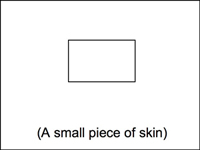
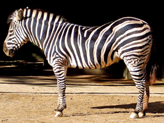
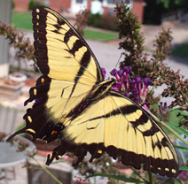
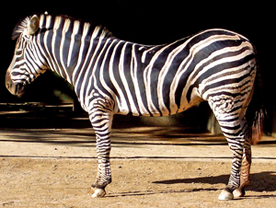
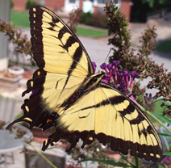
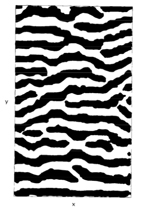
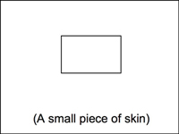
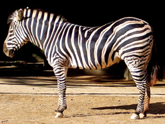
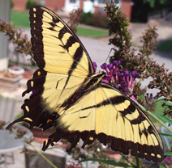

2009 Math Lab
"Why are there animals with spotted bodies and striped tails, but no animal with a striped body and a spotted tail?"
Answer- MATH!
Animals have many different prints on their skin, including spots and stripes. The spots and stripes are random and very different, but they have a definite pattern. This pattern can be explained by math. Under an animal's skin there are cells that make a chemical called melanin that causes coloration. During animal development, some cells start to produce melanin, making them colored, while other cells make a chemical that stops melanin from being made (called an inhibitor) which makes the cells natural colored. The making of the melanin in some cells increases the amount of inhibitor in other cells. The time it takes for the melanin and its inhibitor to spread to surrounding cells, the amount of melanin and inhibitor, and the size and shape of the skin determine the pattern!
Math is used to describe how and why animals have animal patterns such as spots and stripes. Scientists have suggested two different models of predicting animal patterns, each named after the scientist who first described them. One model is called the "Murray Model" named after Dr. James Murray at the University of Oxford (Pictured below)
Dr. Murray used math to explain the patterns found on animals and insects. Dr. Murray’s model, “involved two chemicals which diffuse at different rates and react to produce pattern features which are observed on animal coats. It explained certain regularly observed features such as: you can have a spotted animal with a striped tail but not the other way round, why small animals, like mice, are generally uniform in color as are very large animals like elephants.”
The second math model that is used to describe animal prints is called the "Young Model" after Dr. David Young from the University of California. Dr. Young's model is based on the concentration of the melanin and inhibitor in a cell. He used a math model system, called cellular automata, to graph the animal patterns pictured below.
The Murray Model and the Young Model agree that the spots/stripes depend on the size and the shape of the skin that is being patterned at the time of pattern development. Put your cursor over the picture below to see what the animal pattern will be if the skin is...

Click on the animals below that you think have spots and stripes on their skin because of math...
 



References
The Math Gene: How Mathematical Thinking Evolved and Why Numbers are Like Gossip, Keith Devlin, Published by Basic Books, New York, 2000.
Murray, J.D., Oster, G.F., Harris, A.K., A generalized diffusion model for growth and dispersal in a population. J. Math. Biology, 12: 237-249 (1981).
Murray, J.D., How a Leopard Gets its Spots, SCIENTIFIC AMERICAN, 258: 80 (1988).
Young, D.A., A local activator-inhibitor model of vertebrate skin patterns, Mathematical Biosciences, 72: 51-58 (1984).
"Why are there animals with spotted bodies and striped tails, but no animal with a striped body and a spotted tail?"
Answer- MATH!
Animals have many different prints on their skin, including spots and stripes. The spots and stripes are random and very different, but they have a definite pattern. This pattern can be explained by math. Under an animal's skin there are cells that make a chemical called melanin that causes coloration. During animal development, some cells start to produce melanin, making them colored, while other cells make a chemical that stops melanin from being made (called an inhibitor) which makes the cells natural colored. The making of the melanin in some cells increases the amount of inhibitor in other cells. The time it takes for the melanin and its inhibitor to spread to surrounding cells, the amount of melanin and inhibitor, and the size and shape of the skin determine the pattern!
Math is used to describe how and why animals have animal patterns such as spots and stripes. Scientists have suggested two different models of predicting animal patterns, each named after the scientist who first described them. One model is called the "Murray Model" named after Dr. James Murray at the University of Oxford (Pictured below)
| Picture from: https://www.cvit.org/node/51? |
Dr. Murray used math to explain the patterns found on animals and insects. Dr. Murray’s model, “involved two chemicals which diffuse at different rates and react to produce pattern features which are observed on animal coats. It explained certain regularly observed features such as: you can have a spotted animal with a striped tail but not the other way round, why small animals, like mice, are generally uniform in color as are very large animals like elephants.”
The second math model that is used to describe animal prints is called the "Young Model" after Dr. David Young from the University of California. Dr. Young's model is based on the concentration of the melanin and inhibitor in a cell. He used a math model system, called cellular automata, to graph the animal patterns pictured below.
|  |
| Pictures taken from the figures in Dr. Young’s research article. |
The Murray Model and the Young Model agree that the spots/stripes depend on the size and the shape of the skin that is being patterned at the time of pattern development. Put your cursor over the picture below to see what the animal pattern will be if the skin is...

Click on the animals below that you think have spots and stripes on their skin because of math...


References
The Math Gene: How Mathematical Thinking Evolved and Why Numbers are Like Gossip, Keith Devlin, Published by Basic Books, New York, 2000.
Murray, J.D., Oster, G.F., Harris, A.K., A generalized diffusion model for growth and dispersal in a population. J. Math. Biology, 12: 237-249 (1981).
Murray, J.D., How a Leopard Gets its Spots, SCIENTIFIC AMERICAN, 258: 80 (1988).
Young, D.A., A local activator-inhibitor model of vertebrate skin patterns, Mathematical Biosciences, 72: 51-58 (1984).